Next: Linear Equations Up: Matrices and Analytic Geometry Previous: Number Systems Contents Index
The numbers in a number system are sometimes referred to as scalars .
All of these properties are necessary in order for
 to be a field. These
same properties are used to define other systems like groups and rings.
Students who will go on to take more mathematics courses are well advised to
commit these properties to memory.1.1
to be a field. These
same properties are used to define other systems like groups and rings.
Students who will go on to take more mathematics courses are well advised to
commit these properties to memory.1.1
It is important to realize that the two binary compositions can be different for
different fields. This should not be surprising. We already know that adding two rationals
involves more work than adding two integers. The binary composition  is different for the
integers and the rationals. A list of some different fields is given below:
is different for the
integers and the rationals. A list of some different fields is given below:
and the composition
Examples would be
All the rational numbers are part of the reals and all the reals are part of the complex numbers.
The compositions for each of these fields can be viewed as extensions of the compositions for the
fields they contain. Adding two complex numbers that are also real numbers using the complex  composition will give the same result as using the real
composition will give the same result as using the real  composition. This is not true for
the field of binary numbers since
composition. This is not true for
the field of binary numbers since  in the rational, real and complex number systems.
in the rational, real and complex number systems.
A field that is composed of at least two of the scalars from another field and has exactly the same
binary compositions is called a subfield of that field. An example of a subfield
of the complex field would be all numbers of the form
where  and
and  are rational (not real)
numbers. This subfield and the rational field are two of the fields which are represented in the
Lamp program, which accompanies this text. Very interesting results and applications
are in store for the patient and careful reader. We begin this exploration with a theorem.
are rational (not real)
numbers. This subfield and the rational field are two of the fields which are represented in the
Lamp program, which accompanies this text. Very interesting results and applications
are in store for the patient and careful reader. We begin this exploration with a theorem.
A theorem is a statement which we prove to be true. Most of mathematics is involved with developing theorems and proving them. Students learn to do this by studying existing theorems and examining their proofs, just as artists learn by making copies of masterpieces or children become skilled at computer games by watching how more advanced players do things and trying to emulate them.
The theorem we will examine has to do with trying to know what conditions we need to ensure that we have the correct scalars from a field to form a subfield. (Do not expect to read through the proof in one go. Take your time and make sure you understand each line before proceeding to the next. Write out the proof on scrap paper without looking at the text. This theorem is not especially easy and, if you can master it, you should be able to master every other proof in the text. If you still have difficulties then try rereading this section. If that doesn't help just go to the next section and come back here later.)
Suppose we have a collection of scalars
 which we believe to be a subfield of
a field
which we believe to be a subfield of
a field
 . We must have that
all of the nine properties from the definition of a field hold. The first five properties hold for
all scalars
in
. We must have that
all of the nine properties from the definition of a field hold. The first five properties hold for
all scalars
in
 so they must hold for the scalars in
so they must hold for the scalars in
 . They are, after all, the same scalars,
just fewer
of them, and the binary compositions are exactly the same. We must make sure, though,
that the compositions result in scalars that are also in
. They are, after all, the same scalars,
just fewer
of them, and the binary compositions are exactly the same. We must make sure, though,
that the compositions result in scalars that are also in
 . (We must make sure that
. (We must make sure that
 is closed under the two binary compositions.)
The remaining properties must also be checked
because they involve assertions that certain scalars must exist in
is closed under the two binary compositions.)
The remaining properties must also be checked
because they involve assertions that certain scalars must exist in
 . We can do all of this
by using the following theorem.
. We can do all of this
by using the following theorem.
We have that
 . There is nothing to prevent us from saying that
. There is nothing to prevent us from saying that  and
and  refer to
the same scalar, as long as that scalar is not zero. So let's do that. Let us say that 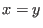
. Then we know
that
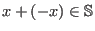
. But 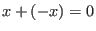
so 0
must be in
refer to
the same scalar, as long as that scalar is not zero. So let's do that. Let us say that 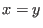
. Then we know
that
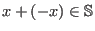
. But 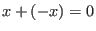
so 0
must be in
 . Similarly,
. Similarly,
 .
Since
.
Since  is in
is in
 , we can then have that
, we can then have that
 is also in
is also in
 . Also,
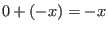
is in
. Also,
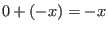
is in
 . So we have shown that 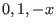
and 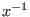
belong to
. So we have shown that 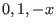
and 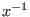
belong to
 , which shows
that properties 6-9 are true. As we have already seen, the other properties are inherited from
, which shows
that properties 6-9 are true. As we have already seen, the other properties are inherited from
 so we only need to show that
so we only need to show that
 is closed under
is closed under  and
and  . We now know that if
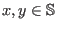
then we must have
. We now know that if
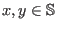
then we must have  and 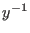
in
and 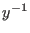
in
 . And this means that
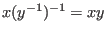
is in
. And this means that
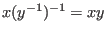
is in
 .
So if we have
then we must have
.
So if we have
then we must have
 , which is what we mean when we say
, which is what we mean when we say
 is closed under multiplication. Similarly,
implies
is closed under multiplication. Similarly,
implies  and 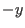
are in
and 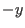
are in
 which implies that
which implies that
 so
so
 is closed under addition. This is
enough to show that the expressions listed in the first five properties all produce scalars that are in
is closed under addition. This is
enough to show that the expressions listed in the first five properties all produce scalars that are in
 . (You may have noticed that we only proved things for
and not about 0
itself,
except for its
existence. That's okay because we already know all about 0
because its properties are inherited from
. (You may have noticed that we only proved things for
and not about 0
itself,
except for its
existence. That's okay because we already know all about 0
because its properties are inherited from
 .)
.)

Theorems are usually of the form:
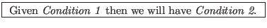
The Condition 1 of our theorem was that whenever we had any two variables  such that
such that
 is not equal to zero and both represent scalars from
is not equal to zero and both represent scalars from
 ,
then it was always true that
and
are in
,
then it was always true that
and
are in
 .
If this were true then we would also have Condition 2, that
.
If this were true then we would also have Condition 2, that
 ,
made up of two or more scalars from
,
made up of two or more scalars from
 , would form a subfield of
, would form a subfield of
 .
.
The theorem says nothing about how we would get Condition 1. To use the theorem we would have to show that a collection of scalars has this condition. Then we would know that it was a subfield without having to show that each property of a field held.
When we try to prove a theorem it is often helpful to rewrite the theorem in this form. We also have to be very sure of what each term means. Writing out the definitions of each term often leads directly to a proof.
There also must be justification for each line in the proof. For example, when we said
Then we know that .we could do so because we knew this from Condition 1, which we assume to be true. All we did was change to
Let's examine another theorem and its proof. This theorem allows us to extend the distributive law
which we have referred to as the fifth condition for the scalars we need to form a field. What we
would like to do is show that
 for scalars
for scalars
 in a field.
Actually, we would like to show this for any number of scalars. To do this, we will need a method
of proof called induction.
in a field.
Actually, we would like to show this for any number of scalars. To do this, we will need a method
of proof called induction.
Induction is easy to understand and usually straigtforward to use. It is a very good technique to have in one's mathematical toolkit. It can be illustrated using the small blocks called dominoes. If we line up a row of dominoes along the floor so that each domino is close to another, then we can tip over the entire line of dominoes by pushing over the first one. Such a row of dominoes is shown in Figure 1.1.
Notice that we do not show all the dominoes, just the first three, three somewhere in the middle and the last two.
Induction works on a list of  statements. Each statement is undeniably true or false.
Also, each statement depends on its order in the list. One such statement might be that if we
knock over the first domino, then the second will tip over. More generally, we might say
that if domino
statements. Each statement is undeniably true or false.
Also, each statement depends on its order in the list. One such statement might be that if we
knock over the first domino, then the second will tip over. More generally, we might say
that if domino  is knocked over, then it will knock over domino
is knocked over, then it will knock over domino  . Induction works in two steps.
. Induction works in two steps.
If we show that if we knock over the first domino, the second domino will fall, we have shown Step 1. If we then show that any domino tipping over will cause the next in line to be knocked over, then we have satisfied Step 2 and we then know that all of the dominoes will be knocked over when we tip over the first one. Figure 1.2 illustrates these two steps.
Now we can use induction to prove our theorem.


is true, then
is true. We assume the first equation is true and add
which is the same as
which is what we wanted to show.
| 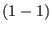 | ||
| 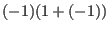 | ||
| 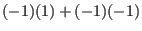 | ||
| 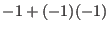 | ||
| 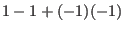 | 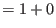 | |
| 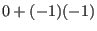 | ||
| 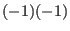 |
Show that
in any field
 .
.

(HINT: Use the theorem we proved that generalized the distributive law.)